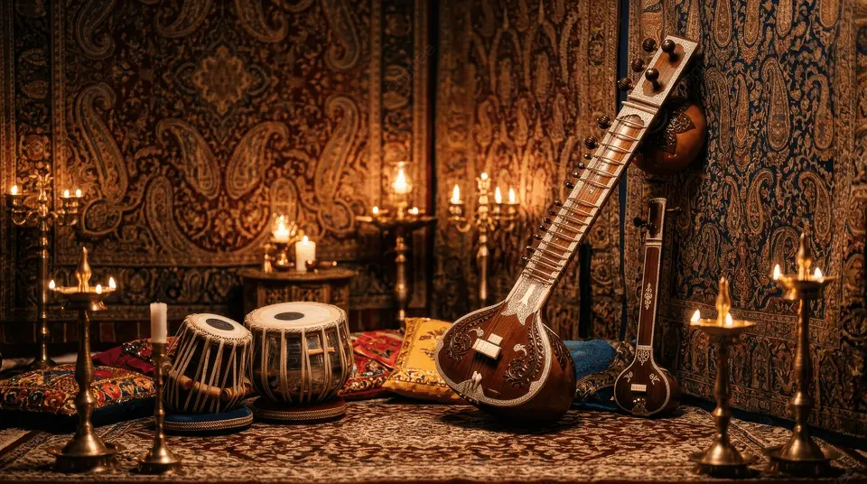
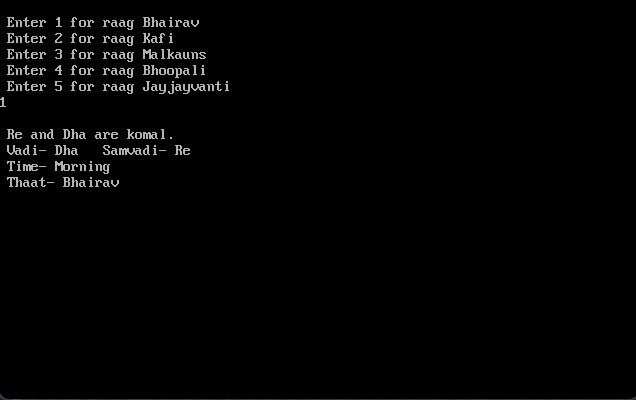
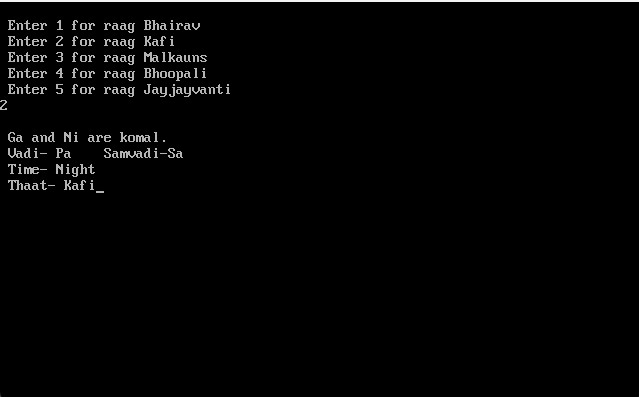
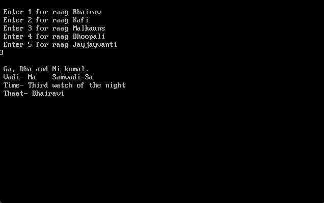
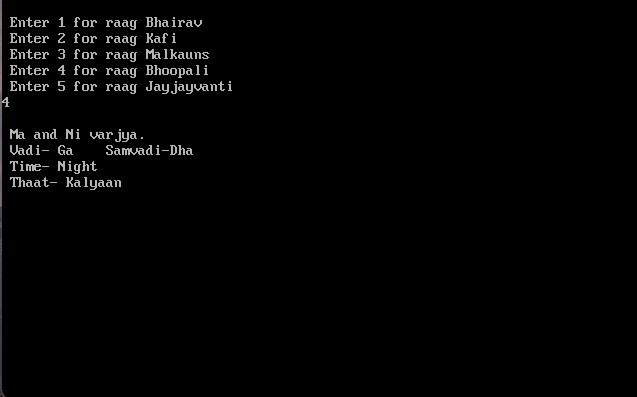
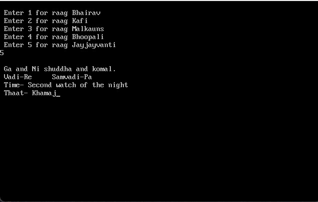
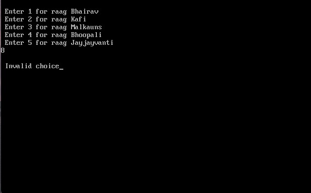

I have been learning Indian classical music for the past 12+ years, and recently learnt C++ in my junior college. I wanted to combine my hobby with my passion and bring culture and programming together.
Raga Explorer is a C++ program that allows the user to select one of five Indian classical raags. After uses enters a choice, information about the raga is displayed on the screen, including its characteristic notes, vadi and samvaadi, time of performance, and thaat.
In Indian Classical music, swar refers to a musical note. The seven basic swars are Sa, Re, Ga, Ma, Pa, Dha, Ni. Shuddha means the natural form of a swar, while Komal refers to a flattened form of Re, Ga, Dha or Ni. Ma can also be Teevra(sharp).
A thaat is a group of seven swars used to classify raags according to their note structure. There are ten commonly recognized thaats in Hindustani classical music.
The vadi is the most prominent or important swar in a raag. It is given particular emphasis during the performance.
The samvadi is the second-most prominent swar in a raag. It complements the vadi and helps establish the character of the raag.
Many Hindustani raags are traditionally associated with particular times of the day. The time is believed to complement the mood and character of the raag, although performances today may take place at other times as well.
The program first displays a numbered menu and takes the user's choice as input. A switch statement then checks the selected number and executes the corresponding case. Each case contains the information associated with one raag. A default case handles an invalid input.
This project helped me practice taking user input, using switch and case, organizing information within a program, and thinking about how a user interacts with a program. I also learned that even a simple program requires attention to how information is presented, not just whether the code works.